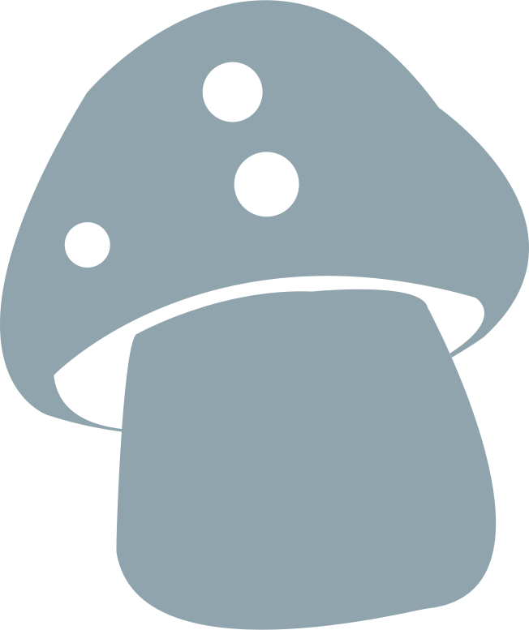
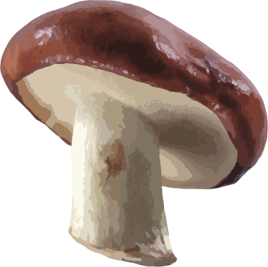

If you are new to machine learning, you may have already run into "Random Forest". If not, you probably will soon.
Let us be a guidepost along the way. Now enter the forest.

The Mushroom Problem
To introduce random forest, we need to start with a real-world example.
You are lost in the woods, and you are running out of food. But you are surrounded by mushrooms. Because you planned ahead, you have a dataset of 8000 kinds of mushrooms and whether they are safe to eat. Unfortunately, the latest mushroom you have come across is not in your list, so you need to decide whether it is safe to eat based on similarity to other mushrooms. The grand problem is:
You are lost in the woods, and you are running out of food. But you are surrounded by mushrooms. Because you planned ahead, you have a dataset of 8000 kinds of mushrooms and whether they are safe to eat. Unfortunately, the latest mushroom you have come across is not in your list, so you need to decide whether it is safe to eat based on similarity to other mushrooms. The grand problem is:
Can I eat this mushroom?
The dataset has 22 descriptors for mushrooms, such as the cap shape, which can be convex, bell, flat, or sunken. Similarly, the cap color can be brown, yellow, white, or gray. Using all these descriptors, called features in machine learning, we will decide if you should eat this mushroom.
Decision Trees
A random forest consists of a collection of decision trees,
each of which works like a rule based predictor.
Decision trees predict the label or value, e.g. edible or not, of a new datapoint based on its features. Here, we use decision trees to predict whether or not the new mushroom will be poisonous based on its 22 features, e.g. mushroom cap shape and color.
To train a decision tree, we give it many examples. In the mushroom problem, the model uses the dataset of 8000 mushrooms to find out a sequence of test of features that will best separate edible mushrooms from poisonous ones. If whether a mushroom stalk's surface is smooth or not is the most telling feature of all in helping us predict if the mushroom is edible, the decision tree uses it first. Then for each of the two outcomes, i.e. smooth or not smooth, the decision tree looks for the next best differentiate feature respectively. It keeps doing this iteratively, and only stops either when all the mushrooms left has the same value, e.g. all edible or poisonous, or when it hits some predetermined stop criteria.
The final structure of a trained decision tree looks like a flowchart. It asks a single question about the test item, moves onto the next question based on the answer, and then asks more questions until it reaches a conclusion.
Check one out below! Hover over the highlighted circles to see more details about the different components of a decision tree. If you want to know more, check out R2D3's Intro to Decision Trees.
Decision trees predict the label or value, e.g. edible or not, of a new datapoint based on its features. Here, we use decision trees to predict whether or not the new mushroom will be poisonous based on its 22 features, e.g. mushroom cap shape and color.
To train a decision tree, we give it many examples. In the mushroom problem, the model uses the dataset of 8000 mushrooms to find out a sequence of test of features that will best separate edible mushrooms from poisonous ones. If whether a mushroom stalk's surface is smooth or not is the most telling feature of all in helping us predict if the mushroom is edible, the decision tree uses it first. Then for each of the two outcomes, i.e. smooth or not smooth, the decision tree looks for the next best differentiate feature respectively. It keeps doing this iteratively, and only stops either when all the mushrooms left has the same value, e.g. all edible or poisonous, or when it hits some predetermined stop criteria.
The final structure of a trained decision tree looks like a flowchart. It asks a single question about the test item, moves onto the next question based on the answer, and then asks more questions until it reaches a conclusion.
Check one out below! Hover over the highlighted circles to see more details about the different components of a decision tree. If you want to know more, check out R2D3's Intro to Decision Trees.
Fallacy of Individual Predictors
While decision trees are great, they sometimes makes mistakes
because they rely too much on the specific dataset they are given,
which can be noisy or contains outliers.
Random forest helps with this problem this by making a
bunch of slightly different trees (a forest, also known as an ensemble)
and combining the results together.
To see how this works, let's consider the following mini made up example, where we use 3 decision trees to predict the edibility of 10 mushrooms.
Below is the actual edibility of the 10 mushrooms - this is what we are trying to predict with our decision trees. In the training process, we know the answer before hand, and we are trying to train the decision tree to give us the same output as the target answer.
To see how this works, let's consider the following mini made up example, where we use 3 decision trees to predict the edibility of 10 mushrooms.
Below is the actual edibility of the 10 mushrooms - this is what we are trying to predict with our decision trees. In the training process, we know the answer before hand, and we are trying to train the decision tree to give us the same output as the target answer.
Below is the prediction of our 1st example decision tree.
It did a pretty good job overall, and only misclassifies the 2nd and 4th mushroom.
Below is the prediction of our 2nd example decision tree.
It also gives pretty good but slightly different predictions.
Unlike the 1st decision tree, it got the 2nd and 4th mushroom right,
but misclassifies the 7th and 9th mushroom.
Now let's add a 3rd example decision tree, which misclassifies the 2nd and 5th mushroom.
What happens if we combine the outputs of all the decision trees?
We will take the prediction most trees agree on (majority vote) as the final prediction.
We only misclassified 1 mushroom using the combined result from the trees,
50% less error rate than the individual trees!
This is why the random forest algorithm is so powerful. It combines the power of individual decision trees, while at the same time producing more robust results because it's less likely to make mistakes.
This is why the random forest algorithm is so powerful. It combines the power of individual decision trees, while at the same time producing more robust results because it's less likely to make mistakes.

Training of Trees
If all decision trees were trained on exactly
the same mushrooms and features, the trees would all be the same,
so they would all predict the same answer,
which wouldn’t be any better than just having one.
Instead, each tree is given a subset of the data and trained on just that subset.
As a result, each decision tree is a specialist in using some subset of the data.
Below, we have a table where each row is a mushroom we can use to train our random forest, and each column is some feature of the mushroom. Only a small part of the table is shown (remember that we have 8000 mushrooms and 22 features for each). Use the buttons below to walk through selecting some data and training some trees for the forest.
Below, we have a table where each row is a mushroom we can use to train our random forest, and each column is some feature of the mushroom. Only a small part of the table is shown (remember that we have 8000 mushrooms and 22 features for each). Use the buttons below to walk through selecting some data and training some trees for the forest.
Training Results
As each tree is trained on different data, they grow different
decision paths. Click each tree to see their individual judging
criteria for if a mushroom is edible or poisonous. You can click
on blue decision nodes to expand the tree.
Making a New Prediction
If we have a new mushroom the trees have never seen before,
we can use them to classify it. We let them take a vote,
and the majority wins. Click on the buttons below to walk
through the process.
Checklist
To bring it home, below are the three key characteristics of the random forest model.
A random forest is an ensemble of decision tree predictors.
Each decision tree is trained using a random subset of the training data.
The final output is the majority vote of the outputs of member decision trees.
We hope you now understand the random forest algorithm better. If you would like to use this yourself, we used Python's sklearn.